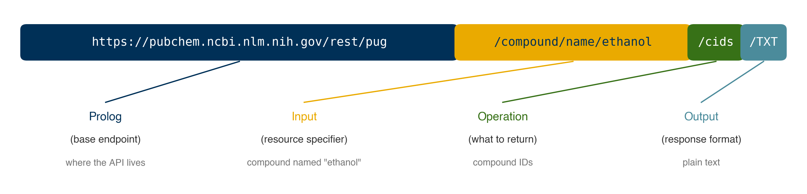

Online Data Access and APIs#
Learning Objectives
By the end of this chapter, you will be able to:
Use the
requestslibrary to retrieve data from web URLsRead remote CSV files and HTML tables directly into pandas DataFrames
Parse and navigate nested JSON data structures to extract chemical properties
Construct RESTful API queries using URL parameters
Pass authentication credentials to APIs that require a key or token
Write robust batch query loops with rate limiting and error handling
Use the PubChemPy Python library to access chemical data programmatically
Select the appropriate data access strategy for a given online source
A large amount of scientific data is only available through the internet. In this chapter we explore three progressively more convenient strategies for accessing online data: raw HTTP requests, RESTful APIs, and Python library APIs. Throughout the chapter we use the PubChem database — a freely available repository of chemical and biological data maintained by the NCBI — as a running example.
Website Data#
The requests Package#
The primary Python package for making HTTP requests is requests. It sends the same kind of request your browser makes when you load a page, and returns whatever the server responds with. For the PubChem page for ethanol, that response is HTML:
import requests
page = requests.get('https://pubchem.ncbi.nlm.nih.gov/compound/Ethanol')
print(page.status_code) # 200 means success
print(page.text[:500]) # first 500 characters of the HTML
200
<!DOCTYPE html>
<html lang="en">
<head>
<meta charset="UTF-8">
<meta name="robots" content="index,follow,noarchive">
<title>Ethanol | CH3CH2OH | CID 702 - PubChem</title>
<script type="text/javascript">
window.ncbi_startTime = new Date ()
</script>
<script type="application/ld+json">
{
"@context": "https://schema.org",
"@type": "Organization",
"name": "PubChem",
"url": "https://pubchem.ncbi.nlm.nih.gov",
The full response is thousands of lines of HTML markup — mostly navigation elements, styling, and JavaScript. Extracting specific values from raw HTML is possible using packages like Beautiful Soup, but it is time-consuming and fragile: if the website updates its layout, your code breaks silently.
Note
Modern web applications frequently render content with JavaScript after the initial page load. A plain requests.get() call returns only the initial server response, which may be empty or incomplete for JavaScript-heavy sites — even when the URL works fine in your browser. In those cases, browser automation tools such as Playwright or Selenium are needed to run the JavaScript before extracting data. For structured scientific databases, using an API (covered below) avoids this problem entirely.
JSON Files#
A more structured approach is to download data in a machine-readable format. PubChem offers a “Download” button that returns the page data as a JSON file. JSON (JavaScript Object Notation) is a widely used text format for structured data; it maps directly onto Python dictionaries and lists.
import json
with open('data/ethanol.json') as f:
etoh = json.load(f)
# Inspect the top-level structure
print(list(etoh.keys()))
print(f'Number of top-level sections: {len(etoh["Record"]["Section"])}')
['Record']
Number of top-level sections: 20
JSON files can be deeply nested. Before writing extraction code, it helps to explore the structure with an interactive viewer such as JSON Crack or the built-in JSON viewer in VS Code. After navigating the PubChem compound-page JSON, we can extract the SMILES string and molecular weight:
SMILES = etoh['Record']['Section'][2]['Section'][1]['Section'][3]['Information'][0]['Value']['StringWithMarkup'][0]['String']
MW = etoh['Record']['Section'][3]['Section'][0]['Section'][0]['Information'][0]['Value']['Number'][0]
print(f'SMILES: {SMILES}')
print(f'Molecular Weight: {MW}')
SMILES: CCO
Molecular Weight: 46.07
The path lengths here reveal why this approach does not scale well: every index was found by manual inspection, and those indices differ between compounds with different amounts of registered data.
Note
What goes wrong with a new compound? The extraction paths above rely on the position of each section in the PubChem full-page JSON. PubChem organizes sections differently depending on how much data exists for a compound — a molecule with fewer synonyms or missing experimental measurements will have different section indices, causing a hardcoded path to either raise a KeyError or silently return the wrong property. The API approaches introduced later in this chapter eliminate this fragility.
PubChem also exposes a much simpler JSON format that stores all compound properties in a flat list. We will see how to obtain this via the REST API; for now, a pre-downloaded copy is provided:
with open('data/ethanol_simple.json') as f:
etoh_simple = json.load(f)
print(list(etoh_simple.keys()))
['PC_Compounds']
Each entry in the props list is a dictionary with a urn (identifying the property by label and name) and a value. Extraction by hardcoded index still works, but remains fragile:
# Index-based access — works for ethanol, but may break for other compounds
SMILES = etoh_simple['PC_Compounds'][0]['props'][18]['value']['sval']
MW = etoh_simple['PC_Compounds'][0]['props'][17]['value']['fval']
print(f'SMILES: {SMILES}')
print(f'Molecular Weight: {MW}')
SMILES: CCO
Molecular Weight: 46.07
A more robust approach searches by label rather than relying on a fixed position:
def get_prop(compound_json, label, name=None):
"""Return the value dict for a property identified by its URN label (and optional name)."""
props = compound_json['PC_Compounds'][0]['props']
for prop in props:
urn = prop['urn']
if urn['label'] == label and (name is None or urn.get('name') == name):
return prop['value']
return None
print(get_prop(etoh_simple, 'SMILES', 'Canonical'))
print(get_prop(etoh_simple, 'Molecular Weight'))
{'sval': 'CCO'}
{'fval': 46.07}
Demonstration: Counting C–H bonds from JSON data
The simple JSON format includes atom and bond arrays that make structural calculations straightforward. Each atom entry carries an atomic number (C = 6, H = 1, O = 8), and each bond entry lists two atom IDs.
bonds = etoh_simple['PC_Compounds'][0]['bonds']
atoms = etoh_simple['PC_Compounds'][0]['atoms']
# Build a mapping from atom ID to atomic number
atom_element = dict(zip(atoms['aid'], atoms['element']))
ch_count = 0
for a1, a2 in zip(bonds['aid1'], bonds['aid2']):
elements = {atom_element[a1], atom_element[a2]}
if elements == {6, 1}: # carbon (6) bonded to hydrogen (1)
ch_count += 1
print(f'Number of C–H bonds in ethanol: {ch_count}') # expected: 5
Number of C–H bonds in ethanol: 5
The set-based check {6, 1} handles both bond orientations (C→H and H→C) without a separate conditional branch. Ethanol has two carbons bearing a total of five hydrogens (CH₃–CH₂–), so the expected count is 5.
Exercise 63
Using ethanol_simple.json, write a function get_formula(compound_json) that returns the molecular formula string (e.g. 'C2H6O') by searching the props list by its 'Molecular Formula' label rather than using a hardcoded index. Test it on the loaded ethanol data.
pandas for Tabular Web Data#
Many data sources publish data as plain CSV files or HTML tables accessible via a URL. The pandas library can read these formats directly — no JSON parsing or manual HTTP request handling required.
pd.read_csv(url) accepts a URL in place of a local file path and downloads the CSV on the fly:
import pandas as pd
# PubChem's REST API can return CSV output directly — use the /CSV output format
url = 'https://pubchem.ncbi.nlm.nih.gov/rest/pug/compound/name/ethanol/property/MolecularWeight,MolecularFormula,CanonicalSMILES/CSV'
df = pd.read_csv(url)
print(df)
CID MolecularWeight MolecularFormula ConnectivitySMILES
0 702 46.07 C2H6O CCO
pd.read_html(url) scrapes all HTML <table> elements from a page and returns them as a list of DataFrames. This is useful for data published in formatted web tables (e.g. Wikipedia property tables, NIST tabular outputs) but inherits the same fragility as other HTML-based approaches: the scraper will break if the page layout changes.
Exercise 64
Extend the multi-compound CSV query above to retrieve XLogP, HBondDonorCount, and HBondAcceptorCount for the ten amino acids: alanine, glycine, valine, leucine, isoleucine, proline, phenylalanine, tryptophan, methionine, and cysteine. Store the result as a DataFrame sorted by XLogP in descending order.
Application Programming Interfaces (APIs)#
An Application Programming Interface (API) is a defined contract that lets one piece of software request services or data from another. APIs are not limited to online data — NumPy and scikit-learn expose APIs — but they are especially prevalent in data science because they make accessing remote databases far more convenient than manual downloading or HTML scraping.
RESTful APIs#
REST (Representational State Transfer) is a widely adopted protocol for web APIs. In a RESTful system, a request is encoded entirely within a URL: the resource you want and the format you want it in are specified as path segments. Because the entire query is a URL, RESTful APIs can be called with a plain requests.get() — no special client is required.
{kind=link}

Fig. 17 Structure of a RESTful API query. The URL is composed of a base endpoint (prolog), a resource specifier (input), an operation, and the desired output format.#
The PubChem PUG REST API follows this pattern precisely:
Component |
Example |
Meaning |
|---|---|---|
Prolog |
|
Base endpoint |
Input |
|
Look up by common name |
Operation |
|
Return compound IDs |
Output |
|
Format as plain text |
r = requests.get('https://pubchem.ncbi.nlm.nih.gov/rest/pug/compound/name/ethanol/cids/TXT')
r.raise_for_status()
print(r.text)
702
The name field is flexible enough to accept CAS numbers directly:
# CAS number for ethanol is 64-17-5
r = requests.get('https://pubchem.ncbi.nlm.nih.gov/rest/pug/compound/name/64-17-5/cids/TXT')
r.raise_for_status()
print(r.text)
702
If the compound is not found, PubChem returns a structured error response rather than silently returning empty content:
r = requests.get('https://pubchem.ncbi.nlm.nih.gov/rest/pug/compound/name/whiskey/cids/TXT')
print(r.text)
Status: 404
Code: PUGREST.NotFound
Message: No CID found
Detail: No CID found that matches the given name
Note
A few practical notes about RESTful APIs in general:
Authentication: Many APIs require an API key or token. PubChem does not require one for basic access, but higher-volume or commercial use cases often do.
Rate limits: PubChem enforces a limit of approximately 5 requests per second. For batch queries over many compounds, insert a short delay:
import time; time.sleep(0.2).Error handling: Always call
r.raise_for_status()before parsing the response, or checkr.status_code == 200explicitly.Documentation: Always read the API documentation before writing query code. For PubChem, see the PUG REST tutorial.
Demonstration: Fetching compound records via the REST API
The REST API can return the full compound JSON record for any compound by name or CAS number — the same structure as ethanol_simple.json — without any manual downloading. Combining this with the get_prop helper from the previous section gives a fully general property lookup:
def get_compound_json(identifier):
"""Fetch the PubChem compound JSON record for a name or CAS number."""
url = f'https://pubchem.ncbi.nlm.nih.gov/rest/pug/compound/name/{identifier}/record/json'
r = requests.get(url)
r.raise_for_status()
return json.loads(r.text)
def get_smiles(identifier):
"""Return the first SMILES string for a compound by name or CAS number."""
data = get_compound_json(identifier)
return get_prop(data, 'SMILES')['sval']
print(get_smiles('ethanol'))
print(get_smiles('64-17-5')) # same compound via CAS number
print(get_smiles('acetone'))
CCO
CCO
CC(=O)C
This is substantially more convenient and robust than navigating the full-page JSON: one function call returns the compound record, and get_prop extracts any property by its human-readable label.
Note
API versioning in practice. The local ethanol_simple.json file (downloaded in 2019) stores SMILES under the property name 'Canonical'. The current PubChem API returns the same label ('SMILES') but uses updated names 'Absolute' and 'Connectivity' instead. This is a real example of API drift: the underlying data did not change, but the metadata describing it did. Querying only by label (and ignoring name) is more resilient to this kind of versioning change.
Exercise 65
Write a function get_properties(identifier, labels) that takes a compound name or CAS number and a list of property label strings (e.g. ['Molecular Weight', 'Molecular Formula']) and returns a dictionary mapping each label to its extracted value. Use get_compound_json and get_prop as building blocks. Test your function on aspirin (CAS 50-78-4).
Demonstration: Batch queries with rate limiting and error handling
When querying many compounds in a loop, two problems arise: exceeding the server’s rate limit, and one failed lookup aborting the entire job. The pattern below handles both:
import time
def batch_smiles(identifiers, delay=0.21):
"""
Fetch SMILES for a list of compound names or CAS numbers.
Returns a dict mapping each identifier to its SMILES string (or None on failure).
delay: seconds to sleep between requests (PubChem limit: ~5 req/s).
"""
results = {}
for ident in identifiers:
try:
r = requests.get(
f'https://pubchem.ncbi.nlm.nih.gov/rest/pug/compound/name/{ident}/property/CanonicalSMILES/JSON'
)
r.raise_for_status()
data = json.loads(r.text)
results[ident] = data['PropertyTable']['Properties'][0]['CanonicalSMILES']
except Exception as e:
results[ident] = None
print(f'Warning: {ident} — {e}')
time.sleep(delay)
return results
compounds = ['ethanol', 'acetone', 'benzene', 'not-a-real-compound']
smiles = batch_smiles(compounds)
for name, s in smiles.items():
print(f'{name:25s} {s}')
Warning: ethanol — 'CanonicalSMILES'
Warning: acetone — 'CanonicalSMILES'
Warning: benzene — 'CanonicalSMILES'
Warning: not-a-real-compound — 404 Client Error: PUGREST.NotFound for url: https://pubchem.ncbi.nlm.nih.gov/rest/pug/compound/name/not-a-real-compound/property/CanonicalSMILES/JSON
ethanol None
acetone None
benzene None
not-a-real-compound None
The try/except Exception block catches network timeouts, HTTP errors raised by raise_for_status(), and unexpected JSON structure, recording None for that compound rather than crashing. The time.sleep(delay) call inserts a 210 ms gap between requests — just under PubChem’s 5 req/s limit — preventing the server from returning HTTP 429 (Too Many Requests) errors.
When the API supports multi-compound queries, prefer a single request over a loop entirely. PubChem supports comma-separated CIDs in the URL path — first resolve names to CIDs, then fetch all properties at once:
import io
# Step 1: resolve names to CIDs (three separate fast requests)
names = ['ethanol', 'acetone', 'benzene']
cids = []
for name in names:
r = requests.get(f'https://pubchem.ncbi.nlm.nih.gov/rest/pug/compound/name/{name}/cids/TXT')
r.raise_for_status()
cids.append(r.text.strip())
time.sleep(0.21)
# Step 2: fetch all properties in one request using the CID list
cids_str = ','.join(cids)
r = requests.get(
f'https://pubchem.ncbi.nlm.nih.gov/rest/pug/compound/cid/{cids_str}/property/CanonicalSMILES,MolecularFormula/CSV'
)
r.raise_for_status()
df_batch = pd.read_csv(io.StringIO(r.text))
print(df_batch)
CID ConnectivitySMILES MolecularFormula
0 702 CCO C2H6O
1 180 CC(=O)C C3H6O
2 241 C1=CC=CC=C1 C6H6
Authenticated APIs#
Most production APIs require a key or token to identify the caller, enforce per-user rate limits, and in some cases gate access to premium data. Keys are typically passed in one of two ways: as a URL query parameter, or as an HTTP header.
# Pattern 1: key as a query parameter (appended to the URL)
# r = requests.get('https://api.example.com/data',
# params={'api_key': api_key, 'name': 'ethanol'})
# Pattern 2: key as an Authorization header (more secure — key not in URL)
# r = requests.get('https://api.example.com/data',
# headers={'Authorization': f'Bearer {api_key}'},
# params={'name': 'ethanol'})
# Always load keys from environment variables — never hard-code them in notebooks
import os
api_key = os.environ.get('MY_API_KEY', 'not-set')
print(f'Key loaded from environment: {api_key != "not-set"}')
Key loaded from environment: False
Warning
Never commit API keys to version-controlled code. Store keys in environment variables (e.g. export MY_API_KEY=... in your shell profile) or in a separate configuration file added to .gitignore. Any key accidentally committed to a public repository should be revoked immediately.
Exercise 66
Write a function authenticated_get(url, api_key, auth_method='header') that wraps requests.get and injects the key either as an Authorization: Bearer header (when auth_method='header') or as an api_key query parameter (when auth_method='query'). Call the function with url='https://httpbin.org/get' and api_key='test-key' for both methods, and use r.json() to verify that the key appears in the response in the expected location (headers or args respectively).
Python APIs: PubChemPy#
RESTful APIs are powerful but still require URL construction, response parsing, and manual JSON navigation. For widely-used databases, the community typically builds a Python wrapper library that handles all of this internally and exposes an intuitive, Pythonic interface.
PubChemPy is the official Python wrapper for the PubChem REST API. Install it via conda-forge (preferred in this course environment) or pip:
# conda install -c conda-forge pubchempy
# or: pip install pubchempy
import pubchempy as pcp
PubChemPy returns Compound objects whose attributes map directly to PubChem properties, with no URL construction or JSON parsing required:
compounds = pcp.get_compounds('Ethanol', 'name')
etoh = compounds[0]
print(f'SMILES: {etoh.canonical_smiles}')
print(f'MW: {etoh.molecular_weight}')
print(f'Formula: {etoh.molecular_formula}')
print(f'IUPAC: {etoh.iupac_name}')
SMILES: CCO
MW: 46.07
Formula: C2H6O
IUPAC: ethanol
/var/folders/d5/ylnycwpn6szdb0t1n25l0d_40000gn/T/ipykernel_64025/1066236847.py:4: PubChemPyDeprecationWarning: canonical_smiles is deprecated: Use connectivity_smiles instead
print(f'SMILES: {etoh.canonical_smiles}')
For targeted queries that return only specific properties — minimizing data transfer — get_properties accepts a list of attribute names:
props = pcp.get_properties(
['CanonicalSMILES', 'MolecularWeight', 'MolecularFormula'],
'ethanol',
'name'
)
print(props)
[{'CID': 702, 'MolecularFormula': 'C2H6O', 'MolecularWeight': '46.07', 'ConnectivitySMILES': 'CCO'}]
Demonstration: Counting C–H bonds with PubChemPy
Using PubChemPy, the C–H bond counting task from the JSON section becomes considerably more readable. The Compound object exposes atoms and bonds attributes that mirror the JSON structure but with named Python attributes:
def count_ch_bonds(name):
"""Return the number of C–H bonds in a compound given its name or CAS number."""
compound = pcp.get_compounds(name, 'name')[0]
count = sum(
1 for bond in compound.bonds
if {compound.atoms[bond.aid1 - 1].element,
compound.atoms[bond.aid2 - 1].element} == {'C', 'H'}
)
return count
print(f"ethanol: {count_ch_bonds('ethanol')}") # expected: 5
print(f"methane: {count_ch_bonds('methane')}") # expected: 4
print(f"benzene: {count_ch_bonds('benzene')}") # expected: 6
ethanol: 5
methane: 4
benzene: 6
The set-based check {'C', 'H'} handles both bond orientations without separate branches, and testing on three compounds with known answers verifies the function is correct.
A few general notes on working with data APIs:
Every data source has a different structure and standards — always read the documentation.
APIs can become outdated if unmaintained; check for a “last updated” date or activity on the repository.
Python wrappers are the most convenient option when available, but may lag behind the underlying REST API.
Some APIs require authentication keys, and most enforce rate limits that must be respected.
Exercise 67
Write a function batch_properties(names) that accepts a list of compound names and returns a pandas DataFrame with columns Name, MolecularFormula, MolecularWeight, and CanonicalSMILES. Use pcp.get_properties to minimize the number of API calls. Test it on ethanol, acetone, and benzene.
Summary#
The
requestslibrary retrieves raw HTTP content from any URL, but parsing HTML is fragile and should be a last resort; modern JavaScript-heavy sites may require browser automation tools instead.pd.read_csv(url)andpd.read_html(url)can ingest remote tabular data directly into DataFrames without manual HTTP handling; APIs that support CSV output are often the most ergonomic option.JSON is a machine-readable format that maps directly to Python dicts and lists; interactive viewers (JSON Crack, VS Code) help navigate complex nested structures.
Hardcoded index-based JSON extraction is brittle — prefer label-based searches, as demonstrated by the
get_prophelper, for code that must work across multiple compounds.RESTful APIs encode queries in the URL and return structured data; the PubChem PUG REST API requires no authentication, accepts names and CAS numbers as identifiers, and enforces a rate limit of ~5 requests per second.
Always call
r.raise_for_status()after an HTTP request, usetry/exceptin batch loops to handle failures gracefully, and addtime.sleep()between requests to respect rate limits.Authenticated APIs accept keys as query parameters or
Authorizationheaders — always load keys from environment variables rather than hard-coding them.Python wrapper libraries such as PubChemPy are the most convenient option when available: they expose Pythonic attribute access, handle all URL construction and JSON parsing internally, and reduce the chance of fragile hardcoded paths.
Additional Reading#
PubChem and general API tooling:
Other scientific databases with REST or Python APIs relevant to chemical engineering:
Database |
Scope |
Interface |
|---|---|---|
Computational materials: crystal structures, electronic properties, phase diagrams |
REST API + |
|
Chemical safety, environmental fate, toxicity data |
REST API; free key required |
|
High-throughput computational materials (alloys, intermetallics) |
REST API; no authentication required |
|
Comprehensive chemical structures (~100 million compounds, Royal Society of Chemistry) |
REST API; free key required |
|
Crystal structures of organic, inorganic, and metal-organic compounds |
REST API; no authentication required |
|
Computational materials science calculations and workflows |
REST API; no authentication required for public data |
Thermophysical property libraries (Python APIs wrapping NIST REFPROP, DIPPR, and similar sources, without requiring HTTP requests):